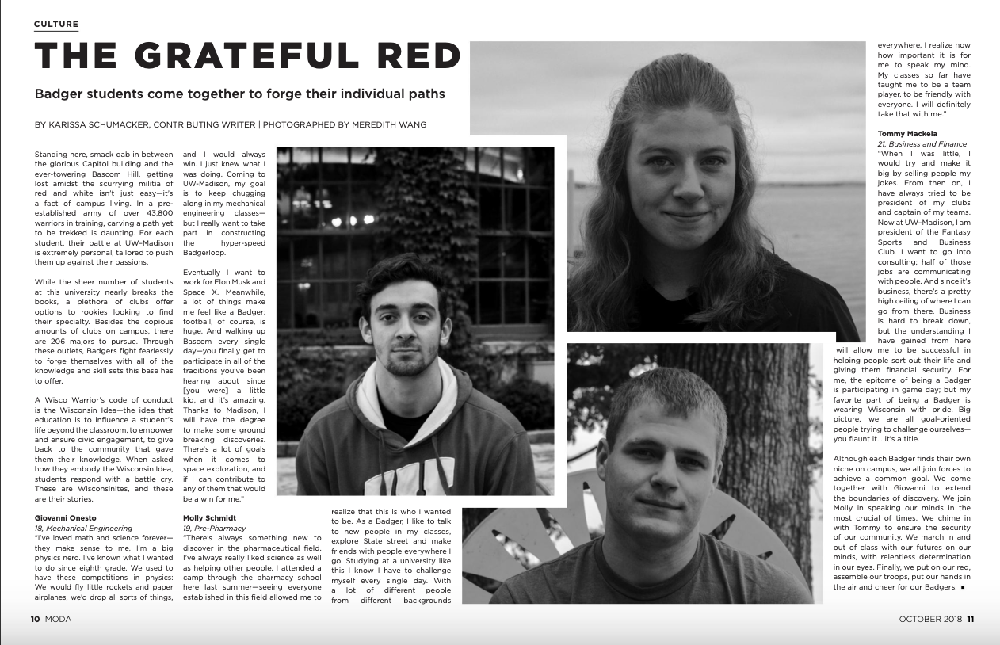
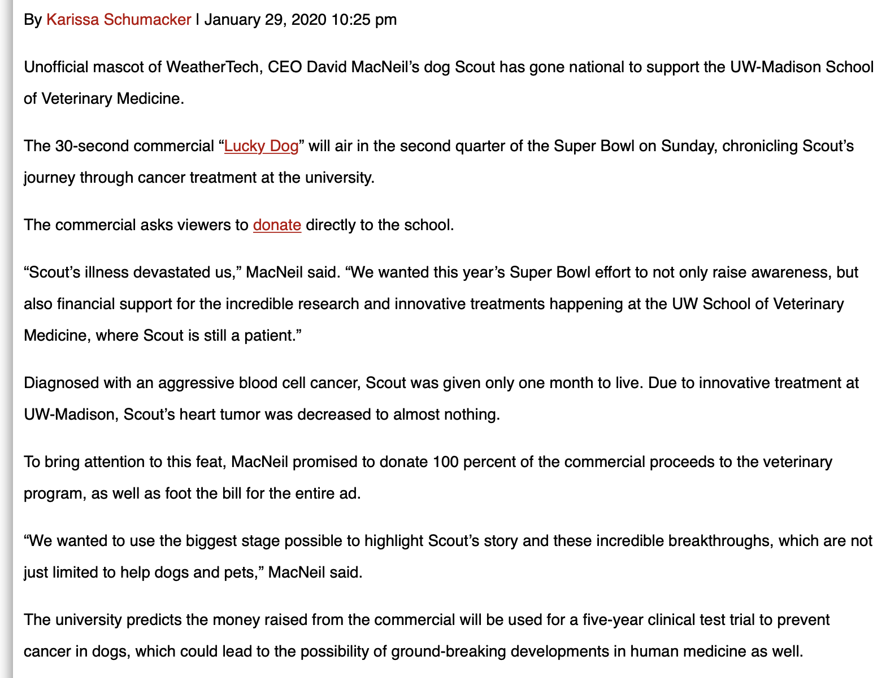

My Experience with Writing
All through high school I loved to write, but decided to begin taking my writing seriously when I got to college. Freshman year, I spent time writing for Moda Magazine. Moda is a student run lifestyle magazine that covers lifestyle and fashion.

Currently, I write for The Daily Cardinal, a student run newspaper that covers news locally. I write for the campus news desk where I cover happenings at the university. I have written just over ten pieces for my editor at this desk.

My more professional writing experiences include:
- Junior Investigator for The Badger Project
- Graphic Designer for As Goes Wisconsin
- Vice President of Communications for the Wisconsin Evans Scholars